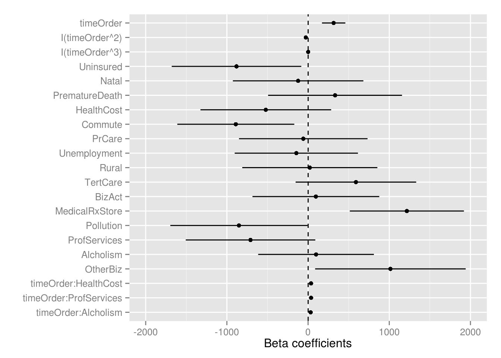
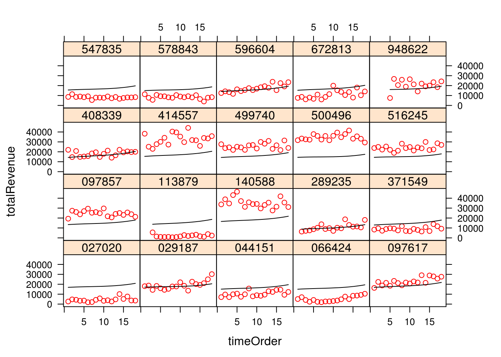
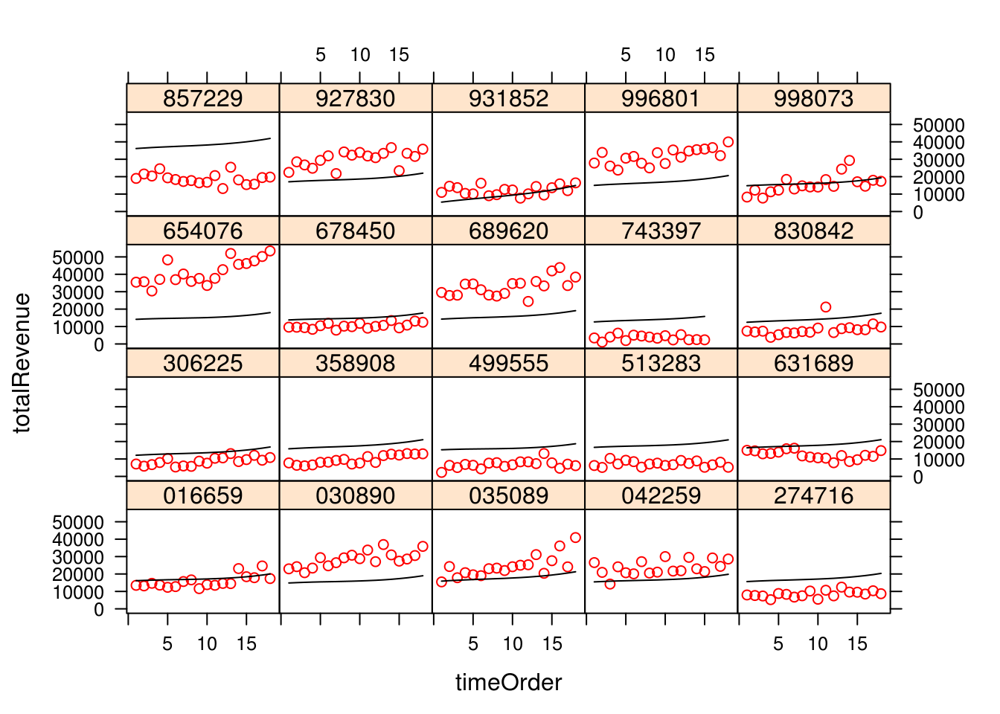

Set paths and load dependencies
## [1] "/mnt/hgfs/projects/insight/models/hlm_fa"## Loading required package: nlme
## Loading required package: lattice
## Loading required package: latticeExtra
## Loading required package: RColorBrewerUse data matrix generated from FA and processed in ../glmmlasso_fa/datamat.Rmd
## Loading objects:
## trnMat
## tstMat
## tstStore
## datamat## Min. 1st Qu. Median Mean 3rd Qu. Max.
## -5059 7401 12470 15660 21730 78330Level 1: monthly revenue
Level 2: store level
Significant factors: timeOrder, MedicalRxStore, Uninsured, Commute, OtherBiz, Pollution, ProfServices #### Intercept as outcome model
#Formulate model
varString=paste(colnames(trnMat)[2:16],collapse=" + ")
formulaString=paste0("totalRevenue ~ timeOrder + ",varString)
formulaString## [1] "totalRevenue ~ timeOrder + Uninsured + Natal + PrematureDeath + HealthCost + Commute + PrCare + Unemployment + Rural + TertCare + BizAct + MedicalRxStore + Pollution + ProfServices + Alcholism + OtherBiz"mod_intAsOutcome=lme(as.formula(formulaString),
random=~timeOrder|storeID,data=trnMat,
na.action=na.omit,control=list(opt="optim"))
summary(mod_intAsOutcome)## Linear mixed-effects model fit by REML
## Data: trnMat
## AIC BIC logLik
## 351876.6 352040.1 -175917.3
##
## Random effects:
## Formula: ~timeOrder | storeID
## Structure: General positive-definite, Log-Cholesky parametrization
## StdDev Corr
## (Intercept) 11429.0435 (Intr)
## timeOrder 405.0188 0.115
## Residual 3923.1988
##
## Fixed effects: as.formula(formulaString)
## Value Std.Error DF t-value p-value
## (Intercept) 14181.602 367.2895 16809 38.61151 0.0000
## timeOrder 249.504 14.0412 16809 17.76939 0.0000
## Uninsured -888.246 409.0857 982 -2.17130 0.0301
## Natal -110.891 412.0087 982 -0.26915 0.7879
## PrematureDeath 322.625 422.7667 982 0.76313 0.4456
## HealthCost -553.052 412.1438 982 -1.34189 0.1799
## Commute -897.747 369.3592 982 -2.43055 0.0153
## PrCare -50.884 405.7964 982 -0.12539 0.9002
## Unemployment -145.142 389.1781 982 -0.37294 0.7093
## Rural 22.835 426.5487 982 0.05353 0.9573
## TertCare 586.424 380.7067 982 1.54035 0.1238
## BizAct 92.133 400.3119 982 0.23015 0.8180
## MedicalRxStore 1215.475 360.2266 982 3.37420 0.0008
## Pollution -858.776 433.3693 982 -1.98163 0.0478
## ProfServices -760.456 408.5255 982 -1.86146 0.0630
## Alcholism 60.471 364.7219 982 0.16580 0.8683
## OtherBiz 1031.632 475.3978 982 2.17004 0.0302
## Correlation:
## (Intr) tmOrdr Unnsrd Natal PrmtrD HlthCs Commut PrCare
## timeOrder 0.043
## Uninsured 0.008 0.000
## Natal -0.007 0.000 -0.164
## PrematureDeath 0.010 0.000 -0.059 -0.198
## HealthCost 0.007 0.000 -0.006 -0.247 -0.083
## Commute -0.005 0.000 -0.115 -0.066 0.089 -0.013
## PrCare -0.003 0.000 0.122 -0.206 0.019 0.186 -0.168
## Unemployment 0.000 0.000 -0.070 -0.147 -0.079 -0.134 -0.061 0.023
## Rural -0.004 0.000 0.219 -0.020 -0.104 -0.065 0.110 0.028
## TertCare -0.014 0.000 -0.073 -0.037 -0.070 0.016 -0.010 0.049
## BizAct 0.010 0.000 0.081 -0.022 -0.005 -0.111 -0.031 0.054
## MedicalRxStore 0.009 0.001 -0.043 0.031 0.012 -0.073 0.020 0.026
## Pollution -0.015 -0.001 0.107 0.018 0.162 -0.126 0.009 -0.082
## ProfServices 0.004 0.000 0.140 -0.023 0.121 0.014 -0.106 -0.132
## Alcholism 0.007 0.000 0.051 0.076 0.025 0.069 0.046 -0.012
## OtherBiz 0.014 0.000 0.127 0.059 0.182 0.102 -0.032 -0.033
## Unmply Rural TertCr BizAct MdclRS Polltn PrfSrv Alchls
## timeOrder
## Uninsured
## Natal
## PrematureDeath
## HealthCost
## Commute
## PrCare
## Unemployment
## Rural 0.113
## TertCare 0.028 -0.114
## BizAct 0.013 0.039 -0.305
## MedicalRxStore -0.020 -0.020 0.096 -0.043
## Pollution -0.082 0.213 -0.005 0.099 0.042
## ProfServices -0.036 0.196 -0.069 0.136 0.010 -0.030
## Alcholism 0.100 -0.051 -0.072 -0.007 0.020 0.014 0.105
## OtherBiz 0.057 0.165 -0.060 0.040 0.001 -0.124 -0.118 0.106
##
## Standardized Within-Group Residuals:
## Min Q1 Med Q3 Max
## -10.64382766 -0.42800759 -0.03694212 0.38197418 22.69986555
##
## Number of Observations: 17808
## Number of Groups: 998Significant factors: timeOrder, MedicalRxStore, Uninsured, Commute, OtherBiz, Pollution, ProfServices timeOrder:HealthCost, timeOrder:ProfServices, timeOrder:Alcholism
varString2=paste0("timeOrder*",colnames(trnMat)[2:16],collapse=" + ")
formulaString2=paste0("totalRevenue ~ ",varString2)
formulaString2## [1] "totalRevenue ~ timeOrder*Uninsured + timeOrder*Natal + timeOrder*PrematureDeath + timeOrder*HealthCost + timeOrder*Commute + timeOrder*PrCare + timeOrder*Unemployment + timeOrder*Rural + timeOrder*TertCare + timeOrder*BizAct + timeOrder*MedicalRxStore + timeOrder*Pollution + timeOrder*ProfServices + timeOrder*Alcholism + timeOrder*OtherBiz"mod_slopeAsOutcome=lme(as.formula(formulaString2),
random=~timeOrder|storeID,data=trnMat,
na.action=na.omit,control=list(opt="optim"))
summary(mod_slopeAsOutcome)## Linear mixed-effects model fit by REML
## Data: trnMat
## AIC BIC logLik
## 351778.1 352058.4 -175853
##
## Random effects:
## Formula: ~timeOrder | storeID
## Structure: General positive-definite, Log-Cholesky parametrization
## StdDev Corr
## (Intercept) 11429.4718 (Intr)
## timeOrder 403.8182 0.115
## Residual 3923.1492
##
## Fixed effects: as.formula(formulaString2)
## Value Std.Error DF t-value p-value
## (Intercept) 14180.677 367.3034 16794 38.60753 0.0000
## timeOrder 249.114 14.0141 16794 17.77591 0.0000
## Uninsured -889.540 409.4852 982 -2.17234 0.0301
## Natal -94.208 412.3959 982 -0.22844 0.8194
## PrematureDeath 320.023 423.1643 982 0.75626 0.4497
## HealthCost -518.348 412.5412 982 -1.25648 0.2092
## Commute -891.955 369.7269 982 -2.41247 0.0160
## PrCare -50.032 406.1905 982 -0.12317 0.9020
## Unemployment -145.231 389.5593 982 -0.37281 0.7094
## Rural 24.310 426.9676 982 0.05694 0.9546
## TertCare 600.605 381.0972 982 1.57599 0.1154
## BizAct 100.228 400.7274 982 0.25011 0.8026
## MedicalRxStore 1198.439 360.5175 982 3.32422 0.0009
## Pollution -840.546 433.7919 982 -1.93767 0.0529
## ProfServices -722.221 408.9429 982 -1.76607 0.0777
## Alcholism 96.697 365.0769 982 0.26487 0.7912
## OtherBiz 1031.374 475.8624 982 2.16738 0.0304
## timeOrder:Uninsured -1.424 15.6169 16794 -0.09116 0.9274
## timeOrder:Natal 15.385 15.7349 16794 0.97776 0.3282
## timeOrder:PrematureDeath -2.700 16.1531 16794 -0.16713 0.8673
## timeOrder:HealthCost 30.756 15.7385 16794 1.95418 0.0507
## timeOrder:Commute 4.737 14.0925 16794 0.33613 0.7368
## timeOrder:PrCare 1.183 15.4886 16794 0.07640 0.9391
## timeOrder:Unemployment 0.190 14.8535 16794 0.01278 0.9898
## timeOrder:Rural 0.812 16.2794 16794 0.04985 0.9602
## timeOrder:TertCare 12.053 14.5181 16794 0.83018 0.4064
## timeOrder:BizAct 6.975 15.2627 16794 0.45700 0.6477
## timeOrder:MedicalRxStore -16.945 13.7910 16794 -1.22872 0.2192
## timeOrder:Pollution 16.180 16.5472 16794 0.97779 0.3282
## timeOrder:ProfServices 32.718 15.5798 16794 2.10003 0.0357
## timeOrder:Alcholism 32.331 13.9236 16794 2.32202 0.0202
## timeOrder:OtherBiz -0.213 18.1462 16794 -0.01175 0.9906
## Correlation:
## (Intr) tmOrdr Unnsrd Natal PrmtrD HlthCs Commut
## timeOrder 0.042
## Uninsured 0.008 0.000
## Natal -0.007 -0.001 -0.164
## PrematureDeath 0.010 0.000 -0.059 -0.198
## HealthCost 0.007 0.000 -0.006 -0.247 -0.083
## Commute -0.005 0.000 -0.115 -0.066 0.089 -0.013
## PrCare -0.003 0.000 0.122 -0.206 0.019 0.186 -0.168
## Unemployment 0.000 0.000 -0.070 -0.147 -0.079 -0.134 -0.061
## Rural -0.004 0.000 0.219 -0.020 -0.104 -0.065 0.110
## TertCare -0.014 0.000 -0.073 -0.037 -0.070 0.016 -0.010
## BizAct 0.010 0.001 0.081 -0.022 -0.005 -0.111 -0.031
## MedicalRxStore 0.009 0.001 -0.043 0.031 0.012 -0.073 0.020
## Pollution -0.015 -0.001 0.107 0.018 0.162 -0.126 0.009
## ProfServices 0.004 0.000 0.140 -0.023 0.121 0.014 -0.106
## Alcholism 0.007 0.000 0.051 0.076 0.025 0.069 0.046
## OtherBiz 0.014 0.001 0.127 0.059 0.182 0.102 -0.032
## timeOrder:Uninsured 0.000 0.008 0.043 -0.007 -0.002 0.000 -0.005
## timeOrder:Natal -0.001 -0.007 -0.007 0.042 -0.009 -0.011 -0.003
## timeOrder:PrematureDeath 0.000 0.011 -0.002 -0.009 0.042 -0.003 0.003
## timeOrder:HealthCost 0.000 0.007 0.000 -0.011 -0.003 0.043 -0.001
## timeOrder:Commute 0.000 -0.005 -0.005 -0.003 0.003 -0.001 0.044
## timeOrder:PrCare 0.000 -0.004 0.005 -0.009 0.001 0.008 -0.007
## timeOrder:Unemployment 0.000 0.000 -0.003 -0.006 -0.003 -0.006 -0.002
## timeOrder:Rural 0.000 -0.004 0.010 -0.001 -0.005 -0.003 0.005
## timeOrder:TertCare 0.000 -0.014 -0.003 -0.002 -0.003 0.001 0.000
## timeOrder:BizAct 0.001 0.010 0.004 -0.001 0.000 -0.005 -0.001
## timeOrder:MedicalRxStore 0.001 0.008 -0.002 0.001 0.000 -0.003 0.000
## timeOrder:Pollution -0.001 -0.015 0.005 0.001 0.007 -0.005 0.000
## timeOrder:ProfServices 0.000 0.003 0.006 -0.001 0.005 0.001 -0.005
## timeOrder:Alcholism 0.000 0.007 0.002 0.003 0.001 0.003 0.002
## timeOrder:OtherBiz 0.001 0.014 0.005 0.002 0.008 0.005 -0.002
## PrCare Unmply Rural TertCr BizAct MdclRS Polltn
## timeOrder
## Uninsured
## Natal
## PrematureDeath
## HealthCost
## Commute
## PrCare
## Unemployment 0.023
## Rural 0.028 0.113
## TertCare 0.049 0.028 -0.114
## BizAct 0.054 0.013 0.039 -0.305
## MedicalRxStore 0.026 -0.020 -0.020 0.096 -0.043
## Pollution -0.082 -0.082 0.213 -0.005 0.099 0.042
## ProfServices -0.132 -0.036 0.196 -0.069 0.136 0.010 -0.030
## Alcholism -0.012 0.100 -0.051 -0.072 -0.007 0.020 0.014
## OtherBiz -0.033 0.057 0.165 -0.060 0.040 0.001 -0.124
## timeOrder:Uninsured 0.005 -0.003 0.010 -0.003 0.004 -0.002 0.005
## timeOrder:Natal -0.009 -0.006 -0.001 -0.002 -0.001 0.001 0.001
## timeOrder:PrematureDeath 0.001 -0.003 -0.005 -0.003 0.000 0.000 0.007
## timeOrder:HealthCost 0.008 -0.006 -0.003 0.001 -0.005 -0.003 -0.005
## timeOrder:Commute -0.007 -0.002 0.005 0.000 -0.001 0.000 0.000
## timeOrder:PrCare 0.043 0.001 0.001 0.002 0.002 0.001 -0.003
## timeOrder:Unemployment 0.001 0.043 0.005 0.001 0.001 0.000 -0.003
## timeOrder:Rural 0.001 0.005 0.043 -0.005 0.002 0.000 0.010
## timeOrder:TertCare 0.002 0.001 -0.005 0.044 -0.014 0.004 0.000
## timeOrder:BizAct 0.002 0.001 0.002 -0.014 0.044 -0.002 0.004
## timeOrder:MedicalRxStore 0.001 0.000 0.000 0.004 -0.002 0.039 0.002
## timeOrder:Pollution -0.003 -0.003 0.010 0.000 0.004 0.002 0.043
## timeOrder:ProfServices -0.006 -0.002 0.009 -0.003 0.006 0.000 -0.001
## timeOrder:Alcholism -0.001 0.004 -0.002 -0.003 0.000 0.001 0.001
## timeOrder:OtherBiz -0.001 0.002 0.007 -0.003 0.002 0.000 -0.005
## PrfSrv Alchls OthrBz tmOrdr:Unn tmOr:N tmO:PD
## timeOrder
## Uninsured
## Natal
## PrematureDeath
## HealthCost
## Commute
## PrCare
## Unemployment
## Rural
## TertCare
## BizAct
## MedicalRxStore
## Pollution
## ProfServices
## Alcholism 0.105
## OtherBiz -0.118 0.106
## timeOrder:Uninsured 0.006 0.002 0.005
## timeOrder:Natal -0.001 0.003 0.002 -0.164
## timeOrder:PrematureDeath 0.005 0.001 0.008 -0.059 -0.197
## timeOrder:HealthCost 0.001 0.003 0.005 -0.006 -0.246 -0.084
## timeOrder:Commute -0.005 0.002 -0.002 -0.115 -0.066 0.089
## timeOrder:PrCare -0.006 -0.001 -0.001 0.121 -0.205 0.018
## timeOrder:Unemployment -0.002 0.004 0.002 -0.070 -0.147 -0.078
## timeOrder:Rural 0.009 -0.002 0.007 0.218 -0.020 -0.104
## timeOrder:TertCare -0.003 -0.003 -0.003 -0.072 -0.037 -0.070
## timeOrder:BizAct 0.006 0.000 0.002 0.081 -0.022 -0.005
## timeOrder:MedicalRxStore 0.000 0.001 0.000 -0.042 0.031 0.012
## timeOrder:Pollution -0.001 0.001 -0.005 0.107 0.018 0.162
## timeOrder:ProfServices 0.044 0.004 -0.005 0.140 -0.023 0.120
## timeOrder:Alcholism 0.004 0.043 0.005 0.051 0.076 0.025
## timeOrder:OtherBiz -0.005 0.005 0.043 0.127 0.060 0.181
## tmO:HC tmOr:C tmO:PC tmOrdr:Unm tmOr:R tmO:TC
## timeOrder
## Uninsured
## Natal
## PrematureDeath
## HealthCost
## Commute
## PrCare
## Unemployment
## Rural
## TertCare
## BizAct
## MedicalRxStore
## Pollution
## ProfServices
## Alcholism
## OtherBiz
## timeOrder:Uninsured
## timeOrder:Natal
## timeOrder:PrematureDeath
## timeOrder:HealthCost
## timeOrder:Commute -0.013
## timeOrder:PrCare 0.185 -0.168
## timeOrder:Unemployment -0.134 -0.061 0.022
## timeOrder:Rural -0.065 0.110 0.028 0.113
## timeOrder:TertCare 0.016 -0.010 0.049 0.029 -0.113
## timeOrder:BizAct -0.112 -0.031 0.054 0.013 0.039 -0.305
## timeOrder:MedicalRxStore -0.073 0.021 0.026 -0.021 -0.021 0.096
## timeOrder:Pollution -0.126 0.009 -0.082 -0.082 0.212 -0.005
## timeOrder:ProfServices 0.013 -0.106 -0.132 -0.036 0.196 -0.069
## timeOrder:Alcholism 0.069 0.046 -0.011 0.100 -0.051 -0.072
## timeOrder:OtherBiz 0.101 -0.032 -0.033 0.058 0.166 -0.059
## tmO:BA tO:MRS tmOr:P tmO:PS tmOr:A
## timeOrder
## Uninsured
## Natal
## PrematureDeath
## HealthCost
## Commute
## PrCare
## Unemployment
## Rural
## TertCare
## BizAct
## MedicalRxStore
## Pollution
## ProfServices
## Alcholism
## OtherBiz
## timeOrder:Uninsured
## timeOrder:Natal
## timeOrder:PrematureDeath
## timeOrder:HealthCost
## timeOrder:Commute
## timeOrder:PrCare
## timeOrder:Unemployment
## timeOrder:Rural
## timeOrder:TertCare
## timeOrder:BizAct
## timeOrder:MedicalRxStore -0.042
## timeOrder:Pollution 0.099 0.042
## timeOrder:ProfServices 0.136 0.010 -0.030
## timeOrder:Alcholism -0.007 0.019 0.014 0.105
## timeOrder:OtherBiz 0.040 0.001 -0.124 -0.118 0.106
##
## Standardized Within-Group Residuals:
## Min Q1 Med Q3 Max
## -10.64290737 -0.42784416 -0.03709434 0.38128814 22.65079016
##
## Number of Observations: 17808
## Number of Groups: 998Significant factors: timeOrder, MedicalRxStore, Uninsured, Commute, Pollution, OtherBiz, ProfServices, timeOrder:HealthCost, timeOrder:ProfServices, timeOrder:Alcholism
formulaString3=paste0(formulaString," + timeOrder*HealthCost + timeOrder*ProfServices + timeOrder*Alcholism")
mod_bestslopeAsOutcome=lme(as.formula(formulaString3),
random=~timeOrder|storeID,data=trnMat,
na.action=na.omit,control=list(opt="optim"))
summary(mod_bestslopeAsOutcome)## Linear mixed-effects model fit by REML
## Data: trnMat
## AIC BIC logLik
## 351846.6 352033.5 -175899.3
##
## Random effects:
## Formula: ~timeOrder | storeID
## Structure: General positive-definite, Log-Cholesky parametrization
## StdDev Corr
## (Intercept) 11429.043 (Intr)
## timeOrder 402.222 0.115
## Residual 3923.161
##
## Fixed effects: as.formula(formulaString3)
## Value Std.Error DF t-value p-value
## (Intercept) 14181.886 367.2891 16806 38.61232 0.0000
## timeOrder 249.782 13.9610 16806 17.89138 0.0000
## Uninsured -888.213 409.0912 982 -2.17119 0.0302
## Natal -111.246 412.0140 982 -0.27000 0.7872
## PrematureDeath 323.192 422.7723 982 0.76446 0.4448
## HealthCost -512.901 412.4467 982 -1.24356 0.2140
## Commute -897.639 369.3642 982 -2.43023 0.0153
## PrCare -51.063 405.8018 982 -0.12583 0.8999
## Unemployment -145.308 389.1833 982 -0.37337 0.7090
## Rural 23.567 426.5544 982 0.05525 0.9560
## TertCare 586.473 380.7120 982 1.54046 0.1238
## BizAct 92.145 400.3174 982 0.23018 0.8180
## MedicalRxStore 1215.665 360.2310 982 3.37468 0.0008
## Pollution -858.621 433.3751 982 -1.98124 0.0478
## ProfServices -717.415 408.8362 982 -1.75477 0.0796
## Alcholism 96.051 365.0443 982 0.26312 0.7925
## OtherBiz 1031.983 475.4042 982 2.17075 0.0302
## timeOrder:HealthCost 35.439 13.9865 16806 2.53378 0.0113
## timeOrder:ProfServices 36.997 13.6259 16806 2.71519 0.0066
## timeOrder:Alcholism 31.442 13.4687 16806 2.33448 0.0196
## Correlation:
## (Intr) tmOrdr Unnsrd Natal PrmtrD HlthCs Commut
## timeOrder 0.042
## Uninsured 0.008 0.000
## Natal -0.007 0.000 -0.164
## PrematureDeath 0.010 0.000 -0.059 -0.198
## HealthCost 0.007 0.000 -0.006 -0.247 -0.083
## Commute -0.005 0.000 -0.115 -0.066 0.089 -0.013
## PrCare -0.003 0.000 0.122 -0.206 0.019 0.186 -0.168
## Unemployment 0.000 0.000 -0.070 -0.147 -0.079 -0.134 -0.061
## Rural -0.004 0.000 0.219 -0.020 -0.104 -0.065 0.110
## TertCare -0.014 0.000 -0.073 -0.037 -0.070 0.016 -0.010
## BizAct 0.010 0.000 0.081 -0.022 -0.005 -0.111 -0.031
## MedicalRxStore 0.009 0.001 -0.043 0.031 0.012 -0.073 0.020
## Pollution -0.015 -0.001 0.107 0.018 0.162 -0.126 0.009
## ProfServices 0.004 0.000 0.140 -0.023 0.120 0.014 -0.106
## Alcholism 0.007 0.000 0.051 0.076 0.025 0.069 0.046
## OtherBiz 0.014 0.000 0.127 0.059 0.182 0.101 -0.032
## timeOrder:HealthCost 0.000 0.008 0.000 0.000 0.000 0.038 0.000
## timeOrder:ProfServices 0.000 -0.002 0.000 0.000 0.001 0.006 0.000
## timeOrder:Alcholism 0.000 0.005 0.000 0.000 0.000 0.004 0.000
## PrCare Unmply Rural TertCr BizAct MdclRS Polltn
## timeOrder
## Uninsured
## Natal
## PrematureDeath
## HealthCost
## Commute
## PrCare
## Unemployment 0.023
## Rural 0.028 0.113
## TertCare 0.049 0.028 -0.114
## BizAct 0.054 0.013 0.039 -0.305
## MedicalRxStore 0.026 -0.020 -0.020 0.096 -0.043
## Pollution -0.082 -0.082 0.213 -0.005 0.099 0.042
## ProfServices -0.132 -0.036 0.196 -0.069 0.136 0.010 -0.030
## Alcholism -0.012 0.099 -0.050 -0.072 -0.007 0.020 0.014
## OtherBiz -0.033 0.057 0.165 -0.060 0.040 0.001 -0.124
## timeOrder:HealthCost 0.000 0.000 0.000 0.000 0.000 0.000 0.000
## timeOrder:ProfServices 0.000 0.000 0.000 0.000 0.000 0.000 0.000
## timeOrder:Alcholism 0.000 0.000 0.000 0.000 0.000 0.001 0.000
## PrfSrv Alchls OthrBz tmO:HC tmO:PS
## timeOrder
## Uninsured
## Natal
## PrematureDeath
## HealthCost
## Commute
## PrCare
## Unemployment
## Rural
## TertCare
## BizAct
## MedicalRxStore
## Pollution
## ProfServices
## Alcholism 0.105
## OtherBiz -0.118 0.106
## timeOrder:HealthCost 0.006 0.005 0.000
## timeOrder:ProfServices 0.039 0.007 0.000 0.150
## timeOrder:Alcholism 0.007 0.042 0.000 0.114 0.181
##
## Standardized Within-Group Residuals:
## Min Q1 Med Q3 Max
## -10.64320667 -0.42791402 -0.03632328 0.38159282 22.66488334
##
## Number of Observations: 17808
## Number of Groups: 998Significant factors: timeOrder, timeOrder^2, timeOrder^3, MedicalRxStore, Uninsured, Commute, Pollution, ProfServices, Other Biz, timeOrder:HealthCost, timeOrder:ProfServices, timeOrder:Alcholism
formulaString4=paste0("totalRevenue ~ timeOrder + I(timeOrder^2) + I(timeOrder^3) + ",varString," + timeOrder*HealthCost + timeOrder*ProfServices + timeOrder*Alcholism")
formulaString4## [1] "totalRevenue ~ timeOrder + I(timeOrder^2) + I(timeOrder^3) + Uninsured + Natal + PrematureDeath + HealthCost + Commute + PrCare + Unemployment + Rural + TertCare + BizAct + MedicalRxStore + Pollution + ProfServices + Alcholism + OtherBiz + timeOrder*HealthCost + timeOrder*ProfServices + timeOrder*Alcholism"mod_polytime=lme(as.formula(formulaString4),
random=~timeOrder|storeID,data=trnMat,
na.action=na.omit,control=list(opt="optim"))
summary(mod_polytime)## Linear mixed-effects model fit by REML
## Data: trnMat
## AIC BIC logLik
## 351691.9 351894.4 -175820
##
## Random effects:
## Formula: ~timeOrder | storeID
## Structure: General positive-definite, Log-Cholesky parametrization
## StdDev Corr
## (Intercept) 11423.7396 (Intr)
## timeOrder 401.9573 0.116
## Residual 3904.4449
##
## Fixed effects: as.formula(formulaString4)
## Value Std.Error DF t-value p-value
## (Intercept) 14520.491 391.3827 16804 37.10050 0.0000
## timeOrder 295.014 66.7536 16804 4.41945 0.0000
## I(timeOrder^2) -26.004 7.8749 16804 -3.30217 0.0010
## I(timeOrder^3) 1.405 0.2726 16804 5.15659 0.0000
## Uninsured -887.865 408.8248 982 -2.17175 0.0301
## Natal -110.776 411.7455 982 -0.26904 0.7880
## PrematureDeath 324.819 422.4971 982 0.76881 0.4422
## HealthCost -510.257 412.1996 982 -1.23789 0.2161
## Commute -898.664 369.1238 982 -2.43459 0.0151
## PrCare -54.142 405.5376 982 -0.13351 0.8938
## Unemployment -143.720 388.9299 982 -0.36953 0.7118
## Rural 23.680 426.2767 982 0.05555 0.9557
## TertCare 584.926 380.4643 982 1.53740 0.1245
## BizAct 90.671 400.0570 982 0.22665 0.8207
## MedicalRxStore 1212.708 359.9966 982 3.36866 0.0008
## Pollution -854.738 433.0935 982 -1.97357 0.0487
## ProfServices -717.614 408.5912 982 -1.75631 0.0793
## Alcholism 97.888 364.8291 982 0.26831 0.7885
## OtherBiz 1031.651 475.0945 982 2.17147 0.0301
## timeOrder:HealthCost 35.065 13.9677 16804 2.51047 0.0121
## timeOrder:ProfServices 36.975 13.6076 16804 2.71726 0.0066
## timeOrder:Alcholism 31.258 13.4506 16804 2.32391 0.0201
## Correlation:
## (Intr) tmOrdr I(O^2) I(O^3) Unnsrd Natal PrmtrD
## timeOrder -0.320
## I(timeOrder^2) 0.310 -0.956
## I(timeOrder^3) -0.282 0.913 -0.988
## Uninsured 0.007 0.000 0.000 0.000
## Natal -0.006 0.000 0.000 0.000 -0.164
## PrematureDeath 0.009 -0.001 0.001 0.000 -0.059 -0.198
## HealthCost 0.007 -0.001 0.001 0.000 -0.006 -0.247 -0.083
## Commute -0.005 0.001 -0.001 0.000 -0.115 -0.066 0.089
## PrCare -0.003 0.000 0.000 0.000 0.122 -0.206 0.019
## Unemployment 0.000 0.000 0.000 0.000 -0.070 -0.147 -0.079
## Rural -0.004 0.000 0.000 0.000 0.219 -0.020 -0.104
## TertCare -0.013 0.001 0.000 0.000 -0.073 -0.037 -0.070
## BizAct 0.009 0.001 0.000 0.000 0.081 -0.022 -0.005
## MedicalRxStore 0.008 0.002 -0.002 0.002 -0.043 0.031 0.012
## Pollution -0.014 -0.001 0.001 -0.001 0.107 0.018 0.162
## ProfServices 0.003 0.000 0.000 0.000 0.140 -0.023 0.120
## Alcholism 0.007 0.000 0.000 0.000 0.051 0.076 0.025
## OtherBiz 0.013 0.000 0.000 0.000 0.127 0.059 0.182
## timeOrder:HealthCost -0.001 0.003 -0.001 0.001 0.000 0.000 0.000
## timeOrder:ProfServices 0.000 -0.001 0.000 0.000 0.000 0.000 0.001
## timeOrder:Alcholism 0.000 0.001 0.000 0.000 0.000 0.000 0.000
## HlthCs Commut PrCare Unmply Rural TertCr BizAct
## timeOrder
## I(timeOrder^2)
## I(timeOrder^3)
## Uninsured
## Natal
## PrematureDeath
## HealthCost
## Commute -0.013
## PrCare 0.186 -0.168
## Unemployment -0.134 -0.061 0.023
## Rural -0.065 0.110 0.028 0.113
## TertCare 0.016 -0.010 0.049 0.028 -0.114
## BizAct -0.111 -0.031 0.054 0.013 0.039 -0.305
## MedicalRxStore -0.073 0.020 0.026 -0.020 -0.020 0.096 -0.043
## Pollution -0.126 0.009 -0.082 -0.082 0.213 -0.005 0.099
## ProfServices 0.014 -0.106 -0.132 -0.036 0.196 -0.069 0.136
## Alcholism 0.069 0.046 -0.012 0.099 -0.050 -0.072 -0.007
## OtherBiz 0.101 -0.032 -0.033 0.057 0.165 -0.060 0.040
## timeOrder:HealthCost 0.039 0.000 0.000 0.000 0.000 0.000 0.000
## timeOrder:ProfServices 0.006 0.000 0.000 0.000 0.000 0.000 0.000
## timeOrder:Alcholism 0.005 0.000 0.000 0.000 0.000 0.000 0.000
## MdclRS Polltn PrfSrv Alchls OthrBz tmO:HC tmO:PS
## timeOrder
## I(timeOrder^2)
## I(timeOrder^3)
## Uninsured
## Natal
## PrematureDeath
## HealthCost
## Commute
## PrCare
## Unemployment
## Rural
## TertCare
## BizAct
## MedicalRxStore
## Pollution 0.042
## ProfServices 0.010 -0.030
## Alcholism 0.020 0.014 0.105
## OtherBiz 0.001 -0.124 -0.118 0.106
## timeOrder:HealthCost 0.000 0.000 0.006 0.005 0.000
## timeOrder:ProfServices 0.000 0.000 0.040 0.008 0.000 0.150
## timeOrder:Alcholism 0.001 0.000 0.007 0.043 0.000 0.114 0.181
##
## Standardized Within-Group Residuals:
## Min Q1 Med Q3 Max
## -10.5806398 -0.4326090 -0.0395984 0.3815859 22.7254229
##
## Number of Observations: 17808
## Number of Groups: 998Significant factors: timeOrder, timeOrder^2, timeOrder^3, MedicalRxStore, Uninsured, Commute, Pollution, ProfServices, Other Biz, timeOrder:HealthCost, timeOrder:ProfServices
mod_cortime=lme(as.formula(formulaString4),
random=~timeOrder|storeID,data=trnMat,
correlation=corExp(),
na.action=na.omit,control=list(opt="optim"))
summary(mod_cortime)## Linear mixed-effects model fit by REML
## Data: trnMat
## AIC BIC logLik
## 351443.7 351653.9 -175694.8
##
## Random effects:
## Formula: ~timeOrder | storeID
## Structure: General positive-definite, Log-Cholesky parametrization
## StdDev Corr
## (Intercept) 11326.995 (Intr)
## timeOrder 389.279 0.156
## Residual 3983.590
##
## Correlation Structure: Exponential spatial correlation
## Formula: ~1 | storeID
## Parameter estimate(s):
## range
## 0.5207887
## Fixed effects: as.formula(formulaString4)
## Value Std.Error DF t-value p-value
## (Intercept) 14467.981 394.3987 16804 36.68364 0.0000
## timeOrder 315.244 73.4088 16804 4.29437 0.0000
## I(timeOrder^2) -28.064 8.7218 16804 -3.21762 0.0013
## I(timeOrder^3) 1.466 0.3017 16804 4.85885 0.0000
## Uninsured -881.524 407.1472 982 -2.16512 0.0306
## Natal -122.594 410.0847 982 -0.29895 0.7650
## PrematureDeath 332.256 420.7899 982 0.78960 0.4300
## HealthCost -520.636 410.6940 982 -1.26770 0.2052
## Commute -890.168 367.5969 982 -2.42159 0.0156
## PrCare -58.936 403.8795 982 -0.14592 0.8840
## Unemployment -144.809 387.3328 982 -0.37386 0.7086
## Rural 21.371 424.5222 982 0.05034 0.9599
## TertCare 589.119 378.8697 982 1.55494 0.1203
## BizAct 95.998 398.3704 982 0.24098 0.8096
## MedicalRxStore 1216.799 358.6526 982 3.39269 0.0007
## Pollution -851.388 431.3145 982 -1.97394 0.0487
## ProfServices -708.789 407.0659 982 -1.74122 0.0820
## Alcholism 97.929 363.5232 982 0.26939 0.7877
## OtherBiz 1014.139 473.1459 982 2.14340 0.0323
## timeOrder:HealthCost 36.061 13.9787 16804 2.57973 0.0099
## timeOrder:ProfServices 36.904 13.6139 16804 2.71074 0.0067
## timeOrder:Alcholism 31.329 13.4591 16804 2.32774 0.0199
## Correlation:
## (Intr) tmOrdr I(O^2) I(O^3) Unnsrd Natal PrmtrD
## timeOrder -0.345
## I(timeOrder^2) 0.332 -0.959
## I(timeOrder^3) -0.300 0.913 -0.987
## Uninsured 0.007 0.000 0.000 0.000
## Natal -0.006 0.000 0.000 0.000 -0.164
## PrematureDeath 0.009 -0.001 0.001 -0.001 -0.059 -0.197
## HealthCost 0.007 -0.001 0.001 -0.001 -0.006 -0.246 -0.083
## Commute -0.005 0.001 -0.001 0.001 -0.115 -0.066 0.089
## PrCare -0.003 0.001 0.000 0.000 0.122 -0.206 0.019
## Unemployment 0.000 0.000 0.000 0.000 -0.070 -0.147 -0.079
## Rural -0.004 0.000 0.000 0.000 0.219 -0.020 -0.104
## TertCare -0.013 0.001 -0.001 0.000 -0.073 -0.037 -0.070
## BizAct 0.009 0.001 0.000 0.000 0.081 -0.022 -0.005
## MedicalRxStore 0.008 0.003 -0.002 0.002 -0.043 0.031 0.012
## Pollution -0.014 -0.001 0.001 -0.001 0.108 0.018 0.162
## ProfServices 0.003 0.000 0.000 0.000 0.139 -0.023 0.120
## Alcholism 0.007 0.000 0.000 0.000 0.051 0.076 0.025
## OtherBiz 0.013 0.000 0.000 0.000 0.127 0.059 0.182
## timeOrder:HealthCost -0.001 0.003 -0.001 0.001 0.000 0.000 0.000
## timeOrder:ProfServices 0.000 -0.001 0.000 0.000 0.000 0.000 0.001
## timeOrder:Alcholism 0.000 0.001 0.000 0.000 0.000 0.000 0.000
## HlthCs Commut PrCare Unmply Rural TertCr BizAct
## timeOrder
## I(timeOrder^2)
## I(timeOrder^3)
## Uninsured
## Natal
## PrematureDeath
## HealthCost
## Commute -0.013
## PrCare 0.186 -0.168
## Unemployment -0.134 -0.061 0.023
## Rural -0.065 0.110 0.028 0.113
## TertCare 0.016 -0.010 0.049 0.028 -0.114
## BizAct -0.111 -0.031 0.054 0.013 0.039 -0.305
## MedicalRxStore -0.073 0.020 0.026 -0.021 -0.020 0.096 -0.043
## Pollution -0.126 0.009 -0.082 -0.082 0.213 -0.005 0.099
## ProfServices 0.014 -0.105 -0.132 -0.036 0.196 -0.069 0.136
## Alcholism 0.069 0.046 -0.012 0.099 -0.050 -0.072 -0.007
## OtherBiz 0.101 -0.032 -0.033 0.057 0.165 -0.060 0.040
## timeOrder:HealthCost 0.049 0.000 0.000 0.000 0.000 0.000 0.000
## timeOrder:ProfServices 0.008 0.000 0.000 0.000 0.001 0.000 0.000
## timeOrder:Alcholism 0.006 0.000 -0.001 -0.001 0.000 0.000 0.000
## MdclRS Polltn PrfSrv Alchls OthrBz tmO:HC tmO:PS
## timeOrder
## I(timeOrder^2)
## I(timeOrder^3)
## Uninsured
## Natal
## PrematureDeath
## HealthCost
## Commute
## PrCare
## Unemployment
## Rural
## TertCare
## BizAct
## MedicalRxStore
## Pollution 0.042
## ProfServices 0.010 -0.030
## Alcholism 0.020 0.014 0.105
## OtherBiz 0.001 -0.124 -0.118 0.106
## timeOrder:HealthCost 0.000 0.000 0.008 0.006 0.001
## timeOrder:ProfServices 0.000 0.000 0.050 0.010 0.000 0.150
## timeOrder:Alcholism 0.001 0.000 0.009 0.054 0.000 0.114 0.181
##
## Standardized Within-Group Residuals:
## Min Q1 Med Q3 Max
## -10.36776026 -0.42770029 -0.03940191 0.37707556 22.45636287
##
## Number of Observations: 17808
## Number of Groups: 998attributes(summary(mod_cortime))## $names
## [1] "modelStruct" "dims" "contrasts" "coefficients"
## [5] "varFix" "sigma" "apVar" "logLik"
## [9] "numIter" "groups" "call" "terms"
## [13] "method" "fitted" "residuals" "fixDF"
## [17] "na.action" "data" "corFixed" "tTable"
## [21] "BIC" "AIC"
##
## $class
## [1] "summary.lme" "lme"
##
## $oClass
## [1] "lme"
##
## $verbose
## [1] FALSEd=as.data.frame(summary(mod_cortime)$tTable[,1:2])
colnames(d)[1]="median"
d$lowlim=d$median-1.96*d$Std.Error
d$upplim=d$median+1.96*d$Std.Error
write.table(d,file="beta_HLM.txt",sep="\t",quote=F,col.names=NA)
save(mod_cortime,d,file="hlm_fa.RData")
#load(file="hlm_fa.RData",verbose=T)
forestplot(d[nrow(d):2,],orderoflevels=NULL,xlab="Beta coefficients",ylab="",xmin=-2000, xmax=2000, xgap=500, sortByLabels=FALSE)## Loading required package: ggplot2
##
## Attaching package: 'ggplot2'
##
## The following object is masked from 'package:latticeExtra':
##
## layer
Best slope as outcome model is the best model
anova(mod_slopeAsOutcome,mod_intAsOutcome)## Warning in anova.lme(mod_slopeAsOutcome, mod_intAsOutcome): fitted objects
## with different fixed effects. REML comparisons are not meaningful.## Model df AIC BIC logLik Test L.Ratio
## mod_slopeAsOutcome 1 36 351778.1 352058.4 -175853.0
## mod_intAsOutcome 2 21 351876.6 352040.1 -175917.3 1 vs 2 128.4606
## p-value
## mod_slopeAsOutcome
## mod_intAsOutcome <.0001anova(mod_bestslopeAsOutcome,mod_slopeAsOutcome)## Warning in anova.lme(mod_bestslopeAsOutcome, mod_slopeAsOutcome): fitted
## objects with different fixed effects. REML comparisons are not meaningful.## Model df AIC BIC logLik Test
## mod_bestslopeAsOutcome 1 24 351846.6 352033.5 -175899.3
## mod_slopeAsOutcome 2 36 351778.1 352058.4 -175853.0 1 vs 2
## L.Ratio p-value
## mod_bestslopeAsOutcome
## mod_slopeAsOutcome 92.52408 <.0001anova(mod_bestslopeAsOutcome,mod_intAsOutcome)## Warning in anova.lme(mod_bestslopeAsOutcome, mod_intAsOutcome): fitted
## objects with different fixed effects. REML comparisons are not meaningful.## Model df AIC BIC logLik Test
## mod_bestslopeAsOutcome 1 24 351846.6 352033.5 -175899.3
## mod_intAsOutcome 2 21 351876.6 352040.1 -175917.3 1 vs 2
## L.Ratio p-value
## mod_bestslopeAsOutcome
## mod_intAsOutcome 35.93649 <.0001anova(mod_polytime,mod_bestslopeAsOutcome)## Warning in anova.lme(mod_polytime, mod_bestslopeAsOutcome): fitted objects
## with different fixed effects. REML comparisons are not meaningful.## Model df AIC BIC logLik Test
## mod_polytime 1 26 351691.9 351894.4 -175820.0
## mod_bestslopeAsOutcome 2 24 351846.6 352033.5 -175899.3 1 vs 2
## L.Ratio p-value
## mod_polytime
## mod_bestslopeAsOutcome 158.6854 <.0001anova(mod_cortime, mod_polytime)## Model df AIC BIC logLik Test L.Ratio p-value
## mod_cortime 1 27 351443.7 351653.9 -175694.8
## mod_polytime 2 26 351691.9 351894.4 -175820.0 1 vs 2 250.2591 <.0001

## [1] 132237820## [1] 0.02248125## [1] 0.03778666